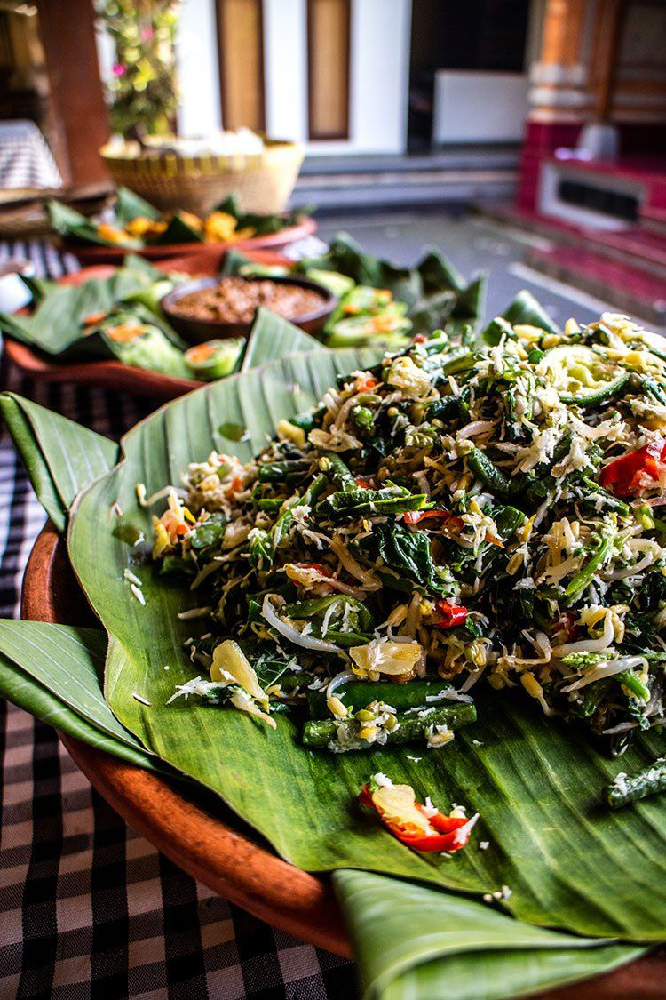

Bahan Sayuran:
Bayam,
Wortel,
Toge,
Kol,
Kacang panjang,
1/2 butir kelapa parut muda,
Bumbu yang Dihaluskan:
6 siung bawang merah,
4 siung bawang putih,
5 buah cabe rawit merah,
7 buah cabe merah,
2 ruas kencur,
2 buah kemiri,
1/2 terasi,
1/2 butir gula jawa kecil,
Garam secukupnya,
Cara Membuat Urap Jawa:
Rebus semua sayur. Rebus sebentar saja agar gizinya tidak hilang.
Siapkan wadah, campurkan bumbu halus dengan kelapa parut. Aduk hingga bumbu merata. Masukkan ke wajan, tambahkan air 100 ml.
Aduk hingga airnya berkurang dan kelapa menjadi kering.
Angkat kelapa yang telah kering, campurkan dengan bahan sayur.
Urap Jawa siap disantap.
Kembali